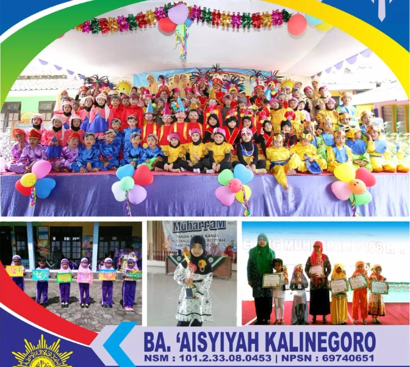

Layanan Kami
Kami menawarkan berbagai layanan untuk membantu anak-anak tumbuh dan belajar dalam lingkungan yang mendukung. Program kami dirancang untuk menumbuhkan kreativitas, rasa ingin tahu, dan kecintaan untuk belajar.
Program Pendidikan
Program pendidikan kami dirancang untuk memenuhi kebutuhan setiap anak. Kami menawarkan berbagai kegiatan yang mendukung perkembangan kognitif, sosial, dan emosional.
Kegiatan Ekstrakurikuler
Kami menyediakan berbagai kegiatan ekstrakurikuler yang memungkinkan anak-anak untuk mengeksplorasi minat mereka dan mengembangkan keterampilan baru. Dari seni dan kerajinan hingga olahraga dan musik, ada sesuatu untuk semua orang.
Dukungan Orang Tua
Kami percaya pada kemitraan yang kuat antara orang tua dan guru. Kami menawarkan sumber daya dan dukungan untuk membantu orang tua terlibat dalam pendidikan dan perkembangan anak mereka.
